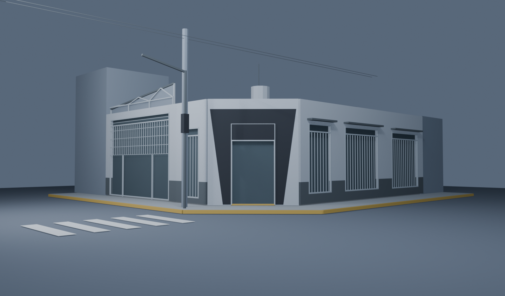
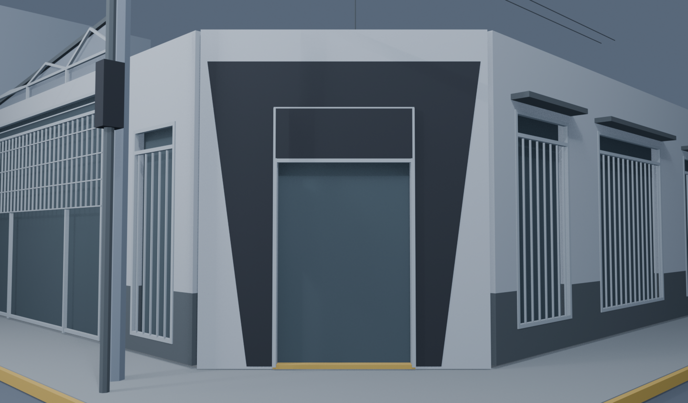
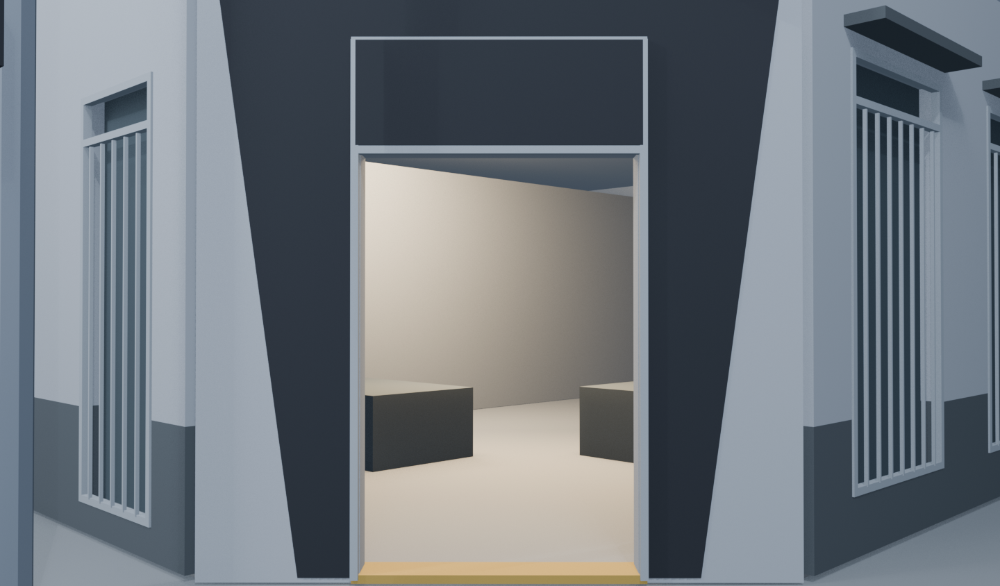
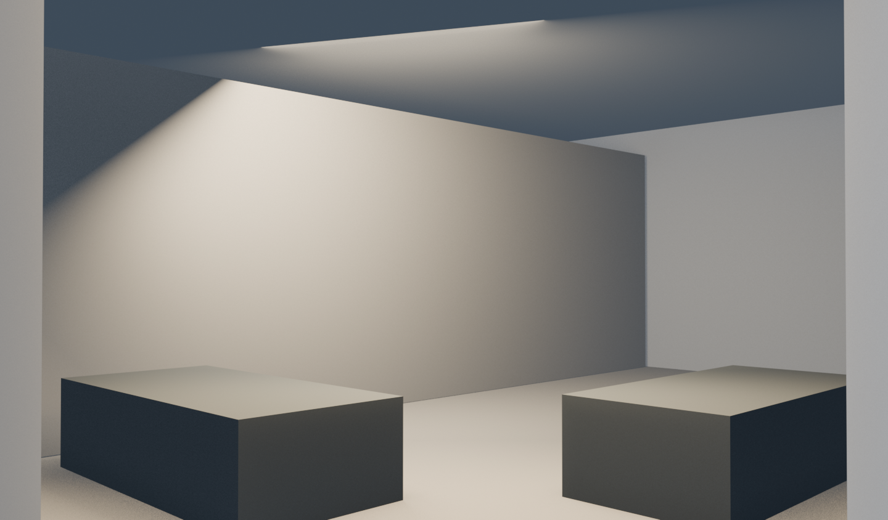
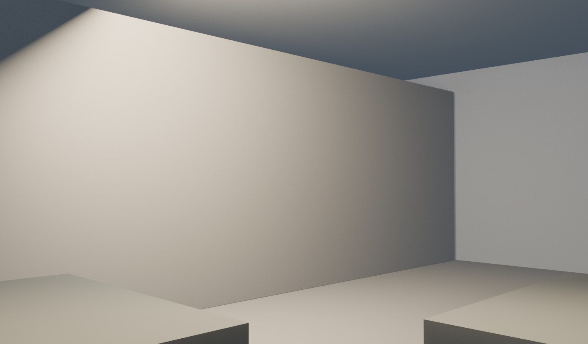
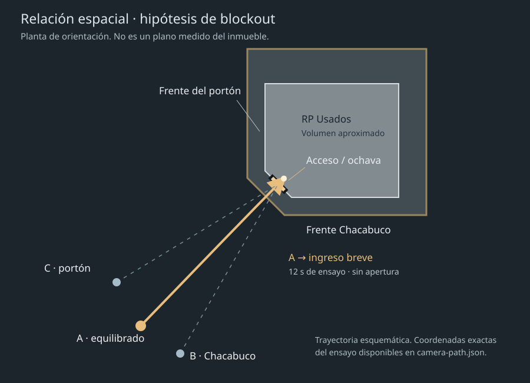
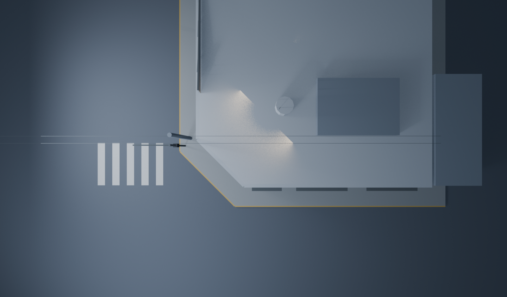
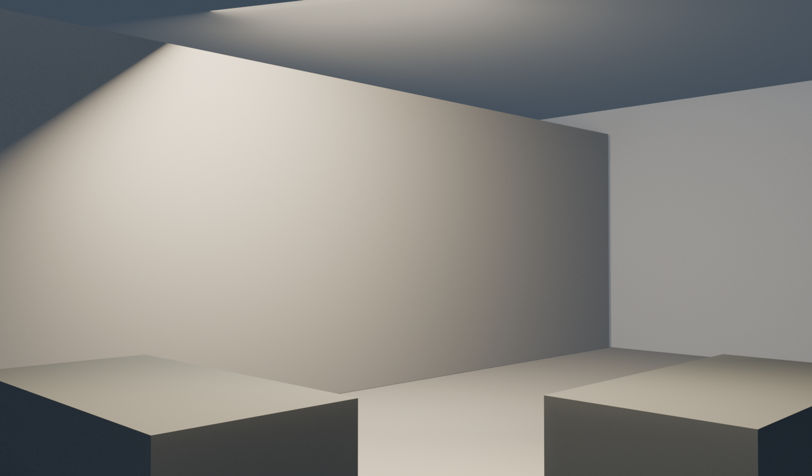

El edificio primero.
La interfaz, después.
Volúmenes, encuadre y recorrido. Las medidas son aproximaciones tomadas de las fotografías, no un relevamiento. Los colores planos identifican las superficies actuales; la iluminación es provisional.

A · Recomendación preliminar. Ambos frentes legibles y trayectoria casi directa al acceso. 34 mm · altura 1,78 m.
Un acercamiento de 12 segundos
Salida suave, aproximación estable, desaceleración cerca del acceso y final a 0,75 m del umbral hacia adentro. Es un ensayo temporal de Blender: todavía no define la duración ni el scroll de la web.
Acceso libre PROVISIONAL. En este video la puerta se omite desde el comienzo exclusivamente para probar la cámara. No hay animación de apertura. El interior y los bloques son referencias de profundidad, no una propuesta de distribución.
Descargar recorridoDescargar .blendInforme y referencias pendientes
El acceso, de cerca

Base cerrada
La puerta es una pieza separada sin mecanismo supuesto. El panel superior reserva el lugar del cartel; no recrea el logo.

Aproximación · frame 145
Aproximadamente 5,6 m afuera. Interior cálido sólo para leer profundidad.

Antes de cruzar · frame 205
1,59 m antes del plano de acceso. La fachada ya cede protagonismo al interior.

Ingreso breve · frame 289
0,75 m adentro. Fondo cerrado para evitar vacío. No representa el interior real ni un showroom nuevo.
Qué falta confirmar
El modelo sirve para juzgar la idea espacial. Antes de afinarlo necesitamos estas referencias; el informe enlazado detalla ángulos y distancias de las fotos.
- Ancho y altura libres del acceso, ancho de ochava, largo de cada frente y altura de fachada.
- Puerta cerrada/abierta y un video corto del mecanismo; detalles de jambas, parte superior y piso.
- Fotos desde el umbral y desde 1 m adentro, mostrando los primeros 3–5 m de piso, techo y laterales.
- Fotos perpendiculares de ambos frentes; cubierta y diagonales del portón desde los dos extremos.
- Posición de postes, ancho de vereda, rampa y escalón. Logo original antes de cartelería final.
Recorrido en planta y vista de volumen


Esta cámara no forma parte del hero. Las cubiertas y volúmenes no visibles desde la calle están simplificados.
Frame adicional: 30 cm antes del umbral

Confirma que la futura transición a la UI podría comenzar antes del cruce físico. No se implementó esa transición.